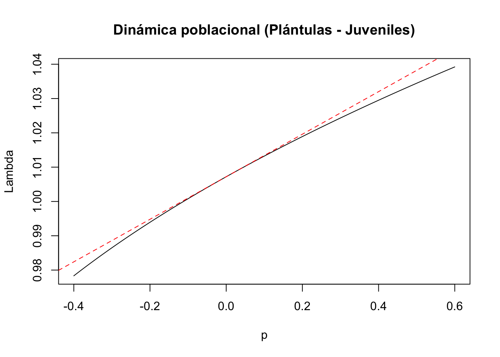

Autores: “Mariana Hernández Apolinar y Paola Portillo Tzompa”
Librerías de R requeridas para el siguiente módulo
Code
library(popdemo)
Welcome to popdemo! This is version 1.3-2
Use ?popdemo for an intro, or browseVignettes('popdemo') for vignettes
Citation for popdemo is here: doi.org/10.1111/j.2041-210X.2012.00222.x
Development and legacy versions are here: github.com/iainmstott/popdemo
La elasticidad no lineal
La elasticidad no lineal (Hodgson and Townley (2004)) se refiere a que los analisis de elasticidad (Caswell (2000), De Kroon, Van Groenendael, and Ehrlén (2000)) como explicado en el capitulo xx no son estrictamente lineal y que las perturbaciones en una población pueden tener efectos no lineales en las respuestas de los parámetros de densidad o indices de crecimientos. Esos cambios no lineales se pueden observar también en la dinámica de transiciones. Si las perturbaciones son pequeñas el uso de análisis de elasticidad pudiesen ser aceptable, por consecuencia los efectos no lineales pueden ser ignorados, pero si las perturbaciones son grandes, los efectos no lineales pueden ser importantes y impactar los procesos de dinámica poblacionales. En los análisis de dinámica poblacional estamos interesado a no solamente el crecimiento de la población pero que pudiese pasar si hubiese cambios pequeños y grandes en los parametros de la matriz sobre los indices de crecimiento y densidad poblacional tal como la supervivencia, crecimiento y fecundidad. La elasticidad no lineal es una herramienta que permite evaluar esos cambios que sean por causa naturales tal como variación ambientales (sucesión, deslizamiento de terreno, mortandad de forofito, cambio climatológico), o antropogénicos (extración de individuos o hasta manejo del sitio para promover el crecimiento de la población).
Es importante reconocer que los análisis de elasticidad y sensitividad ignoran los efectos de la dinámica de transiciones y provee una aproximación linear de cambios que muchas veces no son lineales (Stott, Hodgson, and Townley (2012)).
La elasticidad no lineal es una herramienta que permite evaluar esos cambios que sean por causa naturales tal como variación ambientales (sucesión, deslizamiento de terreno, mortandad de forofito, cambio climatológico), o antropogénicos (extracción de individuos o hasta manejo del sitio para promover el crecimiento de la población).
Metodología
El método que presentamos aquí es el desarollado por Hodgson y Townley (2004) (Hodgson and Townley (2004), Stott, Hodgson, and Townley (2012)), los cuales presentan un método para calcular la elasticidad no lineal. No se discutirá en detalle el método, pero se presentará un ejemplo de como calcular la elasticidad no lineal.
Ejemplo tradicional
Aqui la matriz de lefkovitch para la planta Lepanthes rubripetala (Tremblay et al. 2015) es presentada.
Code
#Capturar los datos de la matriz para L. rubripetala (Tremblay et al. 2015)Lr1 <-matrix(c(0.4324, 0, 0, 0.15,0.3784, 0.8459, 0, 0,0, 0.0034, 0.7954,0.2300,0, 0.0890, 0.1841,0.7510), byrow=TRUE,ncol=4)#Capturar las categorias de estadoestadios <-c("PL", "J", "NR", "AR")colnames(Lr1) <-rownames(Lr1) <- estadios#Obtener la matriz L. rubripetala Lr1 <-matrix(Lr1[1:4, ], nrow =4, dimnames =list(estadios, estadios))Lr1
PL J NR AR
PL 0.4324 0.0000 0.0000 0.150
J 0.3784 0.8459 0.0000 0.000
NR 0.0000 0.0034 0.7954 0.230
AR 0.0000 0.0890 0.1841 0.751
Aqui la matriz de elasticad calculado anteriormente.
Nota que la suma de todos los elementos de la matriz de elasticidad. Proporcionalmente el cambio de la supervivencia de el estado de Adulto Reproductivo (AR) tiene el mayor impacto sobre la tasa de crecimiento poblacional. Un pequeño cambio resultaria en un cambio de 0.311 en la tasa de crecimiento poblacional. Al contrario una plantula que se queda plantula (estasis) tuviese muy poco impacto en el crecimiento de la población (0.018). Esos cambios son lineales y son validos si las perturbaciones son pequeñas. Recordar que los indices de sensitividad para tansiciones y estasis son en unidades diferentes que los fecundidades.
Code
# Matriz de elasticidadelasticidad<-round(elas(Lr1), digit =3)elasticidad
PL J NR AR
PL 0.018 0.000 0.000 0.023
J 0.023 0.122 0.000 0.000
NR 0.000 0.001 0.313 0.083
AR 0.000 0.023 0.083 0.311
Valor biológico
Métodos de calculo
En el paquete de R popdemo se puede calcular la elasticidad no lineal transfer function con la función tfam_lambda y tfam_inertia. La función tfam_lambda calcula la elasticidad no lineal.
La función tfam_lambda calcula la elasticidad no lineal de la matriz de edad o de etapas de cada elemento de la matriz A que no sean 0 (zero). Esa función es practica para vizualizar como las perturbaciones en las transiciones del ciclo de vida impacto lambda y observar la no-linealidad de los efectos.
De las 10 transiciones , estasis o fecundidad, 9 tienen un efecto no lineal sobre lambda. Nota primero que el rango de los ejes de “x” (efecto de perturbaciones) y la “y” el crecimiento porblacional intrinsico varia por cada grafico. La transición de plantula a plantula tiene efecto no lineal sobre lambda bastante pronunciado (primer cuadro a la izquierda primera fila). Se observa que aumentar la proporción de individuos que se quedan en esta etapa no tiene mucho efecto hasta que la perturbación aumenta de ± .5, y despues el efecto es bastante consistente.
La transición de juvenil a no reproductivo tiene un efecto no lineal sobre lambda. La transición de juvenil a adulto reproductivo tiene un efecto no lineal sobre lambda. La transición de no reproductivo a adulto reproductivo tiene un efecto no lineal
La función tfam_inertia calcula la cuan grande o pequeña una población que no este a su equilibro estable puede ser perturbada por consecuencia de dinamica de transiciones. Stott y colegas (Stott, Hodgson, and Townley (2012)) presentan no solamente que el efecto de perturbaciones no es lineal sobre el cambio en lambda pero tambien sobre la inertia, entonces el efecto que tiene sobre poblaciones que no esten a su equilibrio estable.
Usamos la misma temrinalogía de Stott (Stott, Hodgson, and Townley (2012)) para calcular el efecto de elasticidad sobre la inertia de la matriz de L. rubripetala. Se evalua el efecto del basado en la estructura del vector de estado inicial. En otra palabra si la cantidad de individuos se encuentra en un estado especifico. El “upper” seria los individuos en la etapa mayor (en este caso los adultos reproductivos), el “lower” en la estapa menor (en las plantulas) y una estructura de población en al inicio del estudio.
Paquete de R para calcular le eslaticidad no lineal
Referencias
Índices de transferencia. Con el fin de evaluar en el corto plazo qué cambios cuantitativos habría en la población como respuesta ante una perturbación determinada, se calculan los límites de la dinámica transitoria a través de los Índices de transferencia, que incluyen los siguiente tres parámetros (Stoot et al. 2012):
Reactividad alta y Reactividad baja (Upper reactivity y Lower reactivity) que representan el crecimiento o el decremento inmediato (i.e. primer intervalo de tiempo) de la población antes de alcanzar la tasa constante de crecimiento poblacional.
Máxima amplificación/Máxima atenuación (Maximum amplification/Maximum attenuation) que indican,respectivamente, el incremento o decremento máximo futuro del crecimiento poblacional previo a alcanzar la tasa constante de crecimiento poblacional.
Inercia alta e Inercia baja (Upper inertia y Lower inertia) que evalúan el límite más alto o el más bajo en el crecimiento de la población antes de alcanzar la tasa constante de crecimiento poblacional, respectivamente.
Funciones de transferencia
Finalmente, el cálculo de las funciones de transferencia representa el último paso en análisis de dinámica transitoria establecido por Stott y colaboradores (2012). A través de estas ecuaciones se evalúa la elasticidad o efecto de la perturbación sobre la dinámica poblacional. A diferencia de las matrices de elasticidad de los modelos de proyección poblacional, estas elasticidades no son lineales y evidencian la importancia relativa de la de la perturbación en la categoría de tamaño/estado sobre el crecimiento de la población en el corto plazo. Estas ecuaciones también están disponibles en el programa Popdemo de R y sus resultados se representan a través de gráficas.
La perturbación de la estructura está determinada ppor dos vectores d y e
Code
##PASO 6: ANALISIS DE LAS FUNCIONES DE TRANSFERENCIA #Establecer márgenes:#Vector originalnLr0 <-c(0, 46, 38, 82)#PERTURBACIÓN DEL VECTOR ORIGINAL#1) Entrada de la matriz a(1,1): plántulas a plántulastf1 <-tfa_lambda(Lr1, d =c(1, 0, 0, 0),e =c(1, 0, 0, 0),prange =seq(0, 4, 0.01))#Gráfica de la dinámica poblacionalplot(tf1, ann =FALSE)title(main ="Dinámica poblacional (Plántulas - Plántulas)", ylab ="Lambda", xlab ="p")#Cálculo de lambda-max:lambda1 <-Re(eigen(Lr1)$values[1]) #Cálculo de la sensibilidad sens1 <-tfs_lambda(Lr1, d =c(1, 0, 0, 0), e =c(1, 0, 0, 0))#Agregar la línea, especificando el intercepto y la pendienteabline(lambda1, sens1, lty =2, col ="red")
Code
#2) Entrada de la matriz a(2,1): plántulas y juvenilestf2 <-tfa_lambda(Lr1, d =c(0, 1, 0, 0),e =c(1, 0, 0, 0),prange =seq(-0.4, 0.6, 0.01))#Gráfica de la dinámica poblacionalplot(tf2, ann =FALSE)title(main ="Dinámica poblacional (Plántulas - Juveniles)", ylab ="Lambda", xlab ="p")#Cálculo de lambda-max:lambda2 <-Re(eigen(Lr1)$values[1]) #Cálculo de la sensibilidad sens2 <-tfs_lambda(Lr1, d =c(0, 1, 0, 0), e =c(1, 0, 0, 0))#Agregar la línea, especificando el intercepto y la pendienteabline(lambda2, sens2, lty =2, col ="red")

Code
#3) Entrada de la matriz a(2,2): juveniles y juvenilestf3 <-tfa_lambda(Lr1, d =c(0, 1, 0, 0),e =c(0, 1, 0, 0),prange =seq(-0.8, 0.1, 0.001))#Gráfica de la dinámica poblacionalplot(tf3, ann =FALSE)title(main ="Dinámica poblacional (Juveniles - Juveniles)", ylab ="Lambda", xlab ="p")#Cálculo de lambda-max:lambda3 <-Re(eigen(Lr1)$values[1]) #Cálculo de la sensibilidad sens3 <-tfs_lambda(Lr1, d =c(0, 1, 0, 0), e =c(0, 1, 0, 0))#Agregar la línea, especificando el intercepto y la pendienteabline(lambda3, sens3, lty =2, col ="red")
Code
#4) Entrada de la matriz a(3,2): juveniles y no reproductivostf4 <-tfa_lambda(Lr1, d =c(0, 0, 1, 0),e =c(0, 1, 0, 0),prange =seq(-0.001, 0.03, 0.01))#Gráfica de la dinámica poblacionalplot(tf4, ann =FALSE)title(main ="Dinámica poblacional (Juveniles - No reproductivos)", ylab ="Lambda", xlab ="p")#Cálculo de lambda-max:lambda4 <-Re(eigen(Lr1)$values[1]) #Cálculo de la sensibilidadsens4 <-tfs_lambda(Lr1, d =c(0,0,1,0), e =c(0, 1, 0, 0))#Agregar la línea, especificando el intercepto y la pendienteabline(lambda4, sens4, lty =2, col ="red")
Code
#5) Entrada de la matriz a(4,2): juveniles a adultostf5 <-tfa_lambda(Lr1, d =c(0,0,0,1),e =c(0,1,0,0),prange =seq(0,0.8,0.01))#Gráfica de la dinámica poblacionalplot(tf5, ann =FALSE)title(main ="Dinámica poblacional (Juveniles - Adultos)", ylab ="Lambda", xlab ="p")#Cálculo de lambda-max:lambda5 <-Re(eigen(Lr1)$values[1]) #Cálculo de la sensibilidadsens5 <-tfs_lambda(Lr1, d =c(0, 0, 0, 1), e =c(0, 1, 0, 0))#Agregar la línea, especificando el intercepto y la pendienteabline(lambda5, sens5, lty =2, col ="red")
Code
#6) Entrada de la matriz a(3,3): adultos no reproductivos a adultos no reproductivostf6 <-tfa_lambda(Lr1, d =c(0, 0, 1, 0),e =c(0, 0, 1, 0),prange =seq(-0.8, 0.2, 0.01))#Gráfica de la dinámica poblacionalplot(tf6, ann =FALSE)title(main ="Dinámica poblacional (Adultos No rep - Adultos No reproductivos)", ylab ="Lambda", xlab ="p")#Cálculo de lambda-max:lambda6 <-Re(eigen(Lr1)$values[1]) #Cálculo de la sensibilidadsens6 <-tfs_lambda(Lr1, d =c(0,0,0,1), e =c(0,1,0,0))#Agregar la línea, especificando el intercepto y la pendienteabline(lambda6, sens6, lty =2, col ="red")
Code
#7) Entrada de la matriz a(4,3): adultos no reproductivos a adultos reproductivostf7 <-tfa_lambda(Lr1, d =c(0,0,0,1),e =c(0,0,1,0),prange =seq(-0.2,0.8,0.001))#Gráfica de la dinámica poblacionalplot(tf7, ann =FALSE)title(main ="Dinámica poblacional (Adultos No rep - Adultos No rep)", ylab ="Lambda", xlab ="p")#Cálculo de lambda-max:lambda7 <-Re(eigen(Lr1)$values[1]) #Cálculo de la sensibilidadsens7 <-tfs_lambda(Lr1, d =c(0,0,0,1), e =c(0,0,1,0))#Agregar la línea, especificando el intercepto y la pendienteabline(lambda7, sens7, lty =2, col ="red")
Code
#8) Entrada de la matriz a(1,4): adultos reproductivos a plántulastf8 <-tfa_lambda(Lr1, d =c(1,0,0,0),e =c(0,0,0,1),prange =seq(-0.2,0.8,0.001))#Gráfica de la dinámica poblacionalplot(tf8, ann =FALSE)title(main ="Dinámica poblacional (Adultos reproductivos - Plántulas)", ylab ="Lambda", xlab ="p")#Cálculo de lambda-max:lambda8 <-Re(eigen(Lr1)$values[1]) #Cálculo de la sensibilidadsens8 <-tfs_lambda(Lr1, d =c(1,0,0,0), e =c(0,0,0,1))#Agregar la línea, especificando el intercepto y la pendienteabline(lambda8, sens8, lty =2, col ="red")
Code
#9) Entrada de la matriz a(3,4): adultos reproductivos a plántulastf9 <-tfa_lambda(Lr1, d =c(0, 0,1, 0),e =c(0, 0, 0,1),prange =seq(-0.2, 0.8, 0.001))#Gráfica de la dinámica poblacionalplot(tf9, ann =FALSE)title(main ="Dinámica poblacional (Adultos reproductivos - Plántulas)", ylab ="Lambda", xlab ="p")#Cálculo de lambda-max:lambda9 <-Re(eigen(Lr1)$values[1]) #Cálculo de la sensibilidadsens9 <-tfs_lambda(Lr1, d =c(0, 0, 0,1), e =c(0, 0, 1, 0))#Agregar la línea, especificando el intercepto y la pendienteabline(lambda9, sens9, lty =2, col ="red")
Code
#10) Entrada de la matriz a(4,4): adultos reproductivos a adultos reproductivostf10 <-tfa_lambda(Lr1, d =c(0, 0, 0, 1),e =c(0, 0, 0, 1),prange =seq(-0.6, 0.2, 0.001))#Gráfica de la dinámica poblacionalplot(tf10, ann =FALSE)title(main ="Dinámica poblacional (Adultos rep - Adultos rep)", ylab ="Lambda", xlab ="p")#Cálculo de lambda-max:lambda10 <-Re(eigen(Lr1)$values[1]) #Cálculo de la sensibilidadsens10 <-tfs_lambda(Lr1, d =c(0,0,0,1), e =c(0,0,0,1))#Agregar la línea, especificando el intercepto y la pendienteabline(lambda10, sens10, lty =2, col ="red")#Definir márgenespar(mfrow =c(4,4))par(mfg =c(1,1))#Gráficas de la función de transferencia de la inercia en el ciclo de vida de L. rubripetala (población 1)tfmatriz <-tfam_inertia(Lr1,vector = nLr0)plot(tfmatriz)
Raventós y colaboradores (2015) estimaron el crecimiento poblacional de corto plazo de dos orquídeas epífitas después del paso de un huracán. Dado que a su paso se pierden individuos, se simuló si la reintroducción de plántulas y adultos mitigaban los efectos de este fenómeno en Cuba. Los resultados sugieren que la reintroducción de adultos tiene un efecto positivo sobre
De Kroon, Hans, Jan Van Groenendael, and Johan Ehrlén. 2000. “Elasticities: A Review of Methods and Model Limitations.”Ecology 81 (3): 607–18.
Hodgson, David J, and Stuart Townley. 2004. “Methodological Insight: Linking Management Changes to Population Dynamic Responses: The Transfer Function of a Projection Matrix Perturbation.”Journal of Applied Ecology 41 (6): 1155–61.
Stott, Iain, David James Hodgson, and Stuart Townley. 2012. “Beyond Sensitivity: Nonlinear Perturbation Analysis of Transient Dynamics.”Methods in Ecology and Evolution 3 (4): 673–84.